Подборку собрали 21 октября, прошедшие события скрыты. Свежая афиша — на главной
Выходные 24–25 октября
Чем заняться в выходные в Москве
На выходных, 24–25 октября, в нашей афише 46 событий, среди них 18 выставок, 9 спектаклей и 8 вечеров стендапа. А если хочется просто выбраться из дома, у нас 198 планов на день: парк, усадьба или музей, а потом обед или кофе рядом.
- 46 событий
- 198 планов
Афиша на 24–25 октября 40 из 46
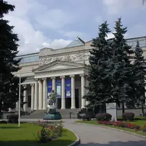
ГМИИ им. А. С. Пушкина, Главное здание · м. Кропоткинская
Большой проект о буддийском искусстве России — спокойный и созерцательный. Последние дни: выставка закрывается 1 ноября, в понедельник музей не работает.
Подробнее: Алмазная колесница. Буддийское искусство РоссииПозвать сюда: Алмазная колесница. Буддийское искусство РоссииБилеты : Алмазная колесница. Буддийское искусство России (страница с билетами, откроется в новой вкладке)
Фото: Ghirlandajo, CC BY-SA 3.0 · Wikimedia Commons
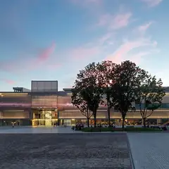
Музей «Гараж», −1 этаж · м. Октябрьская · бесплатно · 12+
Инсталляция-диалог: две лампы общаются вспышками и звуком, а розовая зеркальная комната множит тебя до бесконечности. Вход бесплатный, фото выходят эффектные.
Подробнее: Вадим Фишкин «Словарь воображаемых мест»Позвать сюда: Вадим Фишкин «Словарь воображаемых мест»Билеты : Вадим Фишкин «Словарь воображаемых мест» (страница с билетами, откроется в новой вкладке)
Фото: Garage Museum of Contemporary Art, CC BY-SA 4.0 · Wikimedia Commons
Музей «Гараж», мезонин · м. Октябрьская · бесплатно · 12+
Можно поиграть в искусство: две 8-битные игры-инсталляции индийской художницы по мотивам советских детских книг. Бесплатно, а рядом Парк Горького.
Подробнее: Видеоигры Афры ШафикПозвать сюда: Видеоигры Афры ШафикБилеты : Видеоигры Афры Шафик (страница с билетами, откроется в новой вкладке)
Фото: Garage Museum of Contemporary Art, CC BY-SA 4.0 · Wikimedia Commons
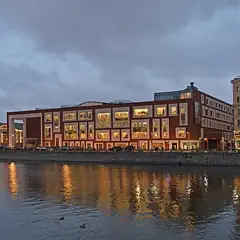
Третьяковка на Кадашёвской · м. Третьяковская · от 450 ₽ · 12+
Больше 140 работ символиста Борисова-Мусатова из двадцати собраний, часть показывают впервые. Мечтательная и очень романтичная живопись.
Подробнее: Виктор Борисов-Мусатов. Гармония образаПозвать сюда: Виктор Борисов-Мусатов. Гармония образаБилеты : Виктор Борисов-Мусатов. Гармония образа (страница с билетами, откроется в новой вкладке)
Фото: Ludvig14, CC BY-SA 4.0 · Wikimedia Commons
ГМИИ им. А. С. Пушкина, Галерея искусства стран Европы и Америки, зал 16 · м. Кропоткинская
Камерная выставка о французском коллекционере Гюставе Файе, поклоннике Гогена, и его связях с русскими собирателями. Один зал — на час; по понедельникам закрыто.
Подробнее: Гюстав Файе и русские коллекционерыПозвать сюда: Гюстав Файе и русские коллекционерыБилеты : Гюстав Файе и русские коллекционеры (страница с билетами, откроется в новой вкладке)
Фото: Ghirlandajo, CC BY-SA 3.0 · Wikimedia Commons
Музей «Гараж», открытое хранение · м. Октябрьская · 12+
Позднесоветские «долгие 80-е»: искусство вместе с телевизором, кино и рок-клубами той поры. Ностальгия для компании; учти, что в залах бывает мигающий свет.
Подробнее: Искусство на частоте 1980-хПозвать сюда: Искусство на частоте 1980-хБилеты : Искусство на частоте 1980-х (страница с билетами, откроется в новой вкладке)
Фото: Garage Museum of Contemporary Art, CC BY-SA 4.0 · Wikimedia Commons
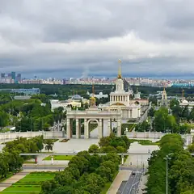
ВДНХ, павильон № 1 «Центральный» · м. ВДНХ · 0+
Около 200 работ о том, как театр и живопись говорят одним языком: Репин, Брюллов, Суриков, Кустодиев и сценические костюмы. Центральный павильон ВДНХ.
Подробнее: Искусство сцены. Академическая живописьПозвать сюда: Искусство сцены. Академическая живописьБилеты : Искусство сцены. Академическая живопись (страница с билетами, откроется в новой вкладке)
Фото: Alexxx1979, CC BY-SA 4.0 · Wikimedia Commons
ГМИИ им. А. С. Пушкина, Галерея искусства стран Европы и Америки · м. Кропоткинская
Кубинские киноафиши и плакаты 1950–70-х — больше 140 листов дерзкой графики. Зайдёт и тем, кто к музеям обычно равнодушен. По понедельникам закрыто.
Подробнее: Кубинский плакат. 1950–1970-е. Кино и революцияПозвать сюда: Кубинский плакат. 1950–1970-е. Кино и революцияБилеты : Кубинский плакат. 1950–1970-е. Кино и революция (страница с билетами, откроется в новой вкладке)
Фото: Ghirlandajo, CC BY-SA 3.0 · Wikimedia Commons
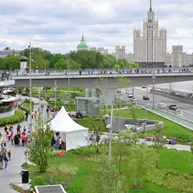
Медиацентр парка «Зарядье» · м. Китай-город · 12+
Выставка памяти одного из первых цифровых художников России: стереопанели, видеоарт и реконструкция мастерской. Логично совместить с прогулкой по Зарядью.
Подробнее: Мастерская новатора. Константин ХудяковПозвать сюда: Мастерская новатора. Константин ХудяковБилеты : Мастерская новатора. Константин Худяков (страница с билетами, откроется в новой вкладке)
Фото: Alina Vozna, CC BY-SA 4.0 · Wikimedia Commons
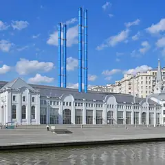
ГЭС-2, галереи С2–С5 · м. Кропоткинская · 12+
Натюрморт, портрет и пейзаж глазами современных художников — сотня работ, десятки авторов. Бесплатный вход — каждую первую среду месяца.
Подробнее: Натюрморт. Портрет. Пейзаж. После жанраПозвать сюда: Натюрморт. Портрет. Пейзаж. После жанраБилеты : Натюрморт. Портрет. Пейзаж. После жанра (страница с билетами, откроется в новой вкладке)
Фото: Юрий Д.К., CC BY 4.0 · Wikimedia Commons
Музей Востока на ВДНХ (павильон № 13) · м. ВДНХ · 0+
Около 250 работ Рериха — от древнерусских мотивов до гималайской серии — плюс тибетские танки и буддийская бронза. Большая выставка в павильоне ВДНХ.
Подробнее: Николай Рерих. Ковчег будущегоПозвать сюда: Николай Рерих. Ковчег будущегоБилеты : Николай Рерих. Ковчег будущего (страница с билетами, откроется в новой вкладке)
Фото: Alexxx1979, CC BY-SA 4.0 · Wikimedia Commons
ЦСИ AZ/ART · м. Китай-город · 0+
Скульптура оттепели в 43 работах: Эрнст Неизвестный, группа ЛЕСС и их современники — и бунтари, и официальные мастера. Небольшая выставка на Маросейке.
Подробнее: Они были разными. Скульптура оттепелиПозвать сюда: Они были разными. Скульптура оттепелиБилеты : Они были разными. Скульптура оттепели (страница с билетами, откроется в новой вкладке)
ГЭС-2, арт-производство «Своды» · м. Кропоткинская · 12+
Выставка о том, как художники думают сериями: вместо одного листа — весь цикл целиком. Небольшая, её легко совместить с другими залами ГЭС-2.
Подробнее: Принцип серийностиПозвать сюда: Принцип серийностиБилеты : Принцип серийности (страница с билетами, откроется в новой вкладке)
Фото: Юрий Д.К., CC BY 4.0 · Wikimedia Commons
Центр «Марс» · м. Сухаревская · 0+
Пять залов-стихий — Огонь, Вода, Воздух, Земля и Эфир, — где ты сам часть работы, а нейроинтерфейс превращает концентрацию в рисунок. Есть вспышки и громкий звук.
Подробнее: Сенс. Эволюция стихийПозвать сюда: Сенс. Эволюция стихийБилеты : Сенс. Эволюция стихий (страница с билетами, откроется в новой вкладке)
ГМИИ им. А. С. Пушкина, Главное здание, зал 31 · м. Кропоткинская
Видеоинсталляция итальянского классика медиаискусства о воде в зале главного здания. Медитативная пауза перед прогулкой; в понедельник музей закрыт.
Подробнее: Фабрицио Плесси. Вертикальные моряПозвать сюда: Фабрицио Плесси. Вертикальные моряБилеты : Фабрицио Плесси. Вертикальные моря (страница с билетами, откроется в новой вкладке)
Фото: Ghirlandajo, CC BY-SA 3.0 · Wikimedia Commons
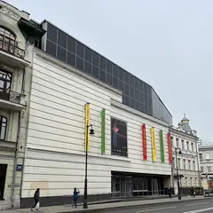
Мультимедиа Арт Музей (МАММ) · м. Кропоткинская · от 100 ₽ · 16+
Фотобиеннале занимает весь МАММ: Роджер Баллен, коллажи Родченко, история метро и многое другое. Билет от 100 ₽, по понедельникам закрыто.
Подробнее: Фотобиеннале-2026Позвать сюда: Фотобиеннале-2026Билеты : Фотобиеннале-2026 (страница с билетами, откроется в новой вкладке)
Фото: JukoFF, CC BY-SA 4.0 · Wikimedia Commons
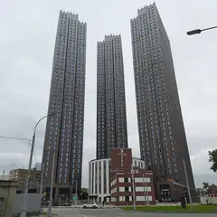
Центр «Зотов» · м. Улица 1905 года · 6+
Выставка о хлебе и эпохе 1917–1939 годов: Кустодиев, Петров-Водкин, Родченко и залы, где пахнет выпечкой. Детям до 13 лет включительно — бесплатно. В понедельник закрыто.
Подробнее: ХлебПозвать сюда: ХлебБилеты : Хлеб (страница с билетами, откроется в новой вкладке)
Фото: MBH, CC BY 4.0 · Wikimedia Commons
Третьяковская галерея · м. Третьяковская · от 450 ₽ · 6+
Редкий шанс увидеть пастели Кипренского, Левитана, Серова и Врубеля — их почти не выставляют. По тому же билету — основная экспозиция; в понедельник закрыто.
Подробнее: Хрупкое искусство. Пастель из фондов графики XVIII — начала XX векаПозвать сюда: Хрупкое искусство. Пастель из фондов графики XVIII — начала XX векаБилеты : Хрупкое искусство. Пастель из фондов графики XVIII — начала XX века (страница с билетами, откроется в новой вкладке)
Фото: A.Savin, CC BY-SA 3.0 · Wikimedia Commons
StandUp Store · м. Чеховская · от 750 ₽ · 18+
Дневной стендап полностью на английском: можно посмеяться и заодно потренировать язык. Недорогой и необычный план на субботу.
Подробнее: Стендап на английском языкеПозвать сюда: Стендап на английском языкеБилеты : Стендап на английском языке (страница с билетами, откроется в новой вкладке)
МТС Live Холл · м. Площадь Ильича · от 3 049 ₽ · 16+
Два сольника подряд. Двери открывают в 18:00, сам артист выходит ближе к 19:30 — успеешь перекусить где-нибудь рядом.
Подробнее: 9miceПозвать сюда: 9miceБилеты : 9mice (страница с билетами, откроется в новой вкладке)
Театр Российской армии, Большая сцена · м. Достоевская · 5 000–44 000 ₽ · 6+
Юбилейная серия сольных концертов: знаменитые песни, новые вещи и разговор с залом о жизни. Вечеров много — до 8 ноября, можно выбрать удобный.
Подробнее: Александр РозенбаумПозвать сюда: Александр РозенбаумБилеты : Александр Розенбаум (страница с билетами, откроется в новой вкладке)
Концертный зал «Москва» · м. Технопарк · от 1 600 ₽ · 18+
Новая программа Бебуришвили: интеллигентный стендап с ностальгией и без пошлости. Хороший вариант посмеяться вдвоём.
Подробнее: Андрей Бебуришвили. «Удобный»Позвать сюда: Андрей Бебуришвили. «Удобный»Билеты : Андрей Бебуришвили. «Удобный» (страница с билетами, откроется в новой вкладке)
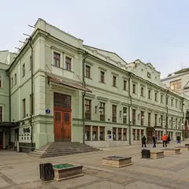
МХТ имени Чехова · м. Охотный ряд · 16+
Булгаков о Мольере: великий актёр, король и цена милости власти. Постановка Юрия Квятковского с Константином Хабенским, три часа с антрактом.
Подробнее: Кабала святошПозвать сюда: Кабала святошБилеты : Кабала святош (страница с билетами, откроется в новой вкладке)
Фото: A.Savin, Free Art License · Wikimedia Commons
VK Stadium · м. Сокол · от 3 300 ₽ · 18+
Презентация нового альбома плюс все старые хиты. Ироничные тексты и громкая электроника — для компании, которая идёт прыгать у сцены.
Подробнее: Пневмослон. Презентация альбома + все хитыПозвать сюда: Пневмослон. Презентация альбома + все хитыБилеты : Пневмослон. Презентация альбома + все хиты (страница с билетами, откроется в новой вкладке)
Стендап клуб на Трубной, Большой зал · м. Трубная · от 1 200 ₽ · 18+
Ночной формат для тех, кто не обижается: ведущий и четыре комика без цензуры и запретных тем. Идёт по пятницам и субботам в 23:00.
Подробнее: Жёсткий стендапПозвать сюда: Жёсткий стендапБилеты : Жёсткий стендап (страница с билетами, откроется в новой вкладке)
STILL, Большой зал · м. Чистые пруды · от 2 500 ₽ · 18+
Формат без ведущего: на сцену по очереди выходят пять хедлайнеров, и лайнап каждый раз другой. Сеансы в 16:00, 19:00 или 21:30 — смотри по дате.
Подробнее: 5 хедлайнеров за 2500₽Позвать сюда: 5 хедлайнеров за 2500₽Билеты : 5 хедлайнеров за 2500₽ (страница с билетами, откроется в новой вкладке)
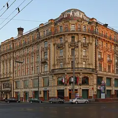
Гастротеатр «Калейдоскоп» · м. Охотный ряд · 18 000–25 000 ₽ · 12+
Гастрошоу у Манежной: два часа путешествия от пирамид Гизы до садов Семирамиды, к каждому чуду — свой сет. Вариант для особого свидания.
Подробнее: 7 чудес светаПозвать сюда: 7 чудес светаБилеты : 7 чудес света (страница с билетами, откроется в новой вкладке)
Фото: A.Savin, CC BY-SA 3.0 · Wikimedia Commons
SVET · м. Китай-город · от 25 000 ₽ · 6+
Ужин-спектакль режиссёра Алексея Франдетти и шефа Станислава Песоцкого: семь подач, живой вокал и проекции на 360°. Дорогой, но памятный вечер.
Подробнее: Атлантида. Тайна шести мировПозвать сюда: Атлантида. Тайна шести мировБилеты : Атлантида. Тайна шести миров (страница с билетами, откроется в новой вкладке)
Стендап клуб на Трубной, Большой зал · м. Трубная · 950–1 500 ₽ · 18+
Фирменный вечер клуба: опытные комики с обкатанным материалом. Показы почти каждый день, по пятницам и субботам — в 19:00 и 21:00.
Подробнее: Биг стендапПозвать сюда: Биг стендапБилеты : Биг стендап (страница с билетами, откроется в новой вкладке)
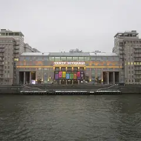
Театр эстрады · м. Кропоткинская · 1 800–20 000 ₽ · 16+
Мюзикл Михаила Миронова на песнях Александра Розенбаума — история длиною в жизнь. Играют почти каждый день до 29 ноября, в выходные дважды.
Подробнее: Вальс-бостонПозвать сюда: Вальс-бостонБилеты : Вальс-бостон (страница с билетами, откроется в новой вкладке)
Фото: ATI1999, CC BY-SA 4.0 · Wikimedia Commons
Мосспектакль · м. Курская · от 8 000 ₽ · 18+
Иммерсивный ужин-спектакль по Гоголю в особняке XIX века: фуршет под рояль, потом страшно-смешная история, где ты участник. 30 октября начало в 21:00.
Подробнее: ВийПозвать сюда: ВийБилеты : Вий (страница с билетами, откроется в новой вкладке)
Московский театр оперетты · м. Охотный ряд · 1 000–9 100 ₽ · 12+
Мюзикл от авторов «Монте-Кристо» о графе Алексее Орлове и загадочной самозванке Елизавете. Два блока: 20–25 октября и 15–20 декабря.
Подробнее: Граф ОрловПозвать сюда: Граф ОрловБилеты : Граф Орлов (страница с билетами, откроется в новой вкладке)
Perepel · м. Цветной бульвар · от 950 ₽ · 18+
Лото на песнях: отмечаешь в карточке играющие треки от 90-х до новинок, подпеваешь и борешься за призы. 31 октября начало в 17:00.
Подробнее: Музыкальное лото с караокеПозвать сюда: Музыкальное лото с караокеБилеты : Музыкальное лото с караоке (страница с билетами, откроется в новой вкладке)
Навка Арена · м. Терехово · от 4 000 ₽
Ледовый спектакль по Пушкину под музыку Чайковского — мировая премьера Navka Show. Германа играет Никита Кацалапов, Томского — Алексей Ягудин; всего восемь вечеров.
Подробнее: Пиковая дама. Ледовый спектакль Татьяны НавкиПозвать сюда: Пиковая дама. Ледовый спектакль Татьяны НавкиБилеты : Пиковая дама. Ледовый спектакль Татьяны Навки (страница с билетами, откроется в новой вкладке)
Иммерсивный театр «Морфеус» · м. Павелецкая · 3 900–4 900 ₽ · 16+
Иммерсивная комедия с закрытыми глазами: семь зрителей попадают в Москву 1903 года с театральными интригами и кафе. Полтора часа, несколько сеансов в день.
Подробнее: Поезд, Чехов, два орлаПозвать сюда: Поезд, Чехов, два орлаБилеты : Поезд, Чехов, два орла (страница с билетами, откроется в новой вкладке)
Театр на Цветном · м. Трубная · 1 500–7 700 ₽ · 12+
Продолжение комедии «Мамма мимо!»: провинциальной труппе дают сутки на авангардного «Призрака оперы». Пародии на хиты и много смеха.
Подробнее: Призрак мюзикла, или Что опять не так?Позвать сюда: Призрак мюзикла, или Что опять не так?Билеты : Призрак мюзикла, или Что опять не так? (страница с билетами, откроется в новой вкладке)
STILL, Большой зал · м. Чистые пруды · от 1 080 ₽ · 18+
Вечер в двух актах: сначала живой джаз, затем стендап от трёх комиков, каждый раз в новом составе. В пятницу начинают в 21:30, в другие дни — в 18:30.
Подробнее: Стендап + джаз: два концерта в один вечерПозвать сюда: Стендап + джаз: два концерта в один вечерБилеты : Стендап + джаз: два концерта в один вечер (страница с билетами, откроется в новой вкладке)
StandUp Cafe, Большой зал · м. Чистые пруды · от 1 190 ₽ · 18+
Свечи, комики и виолончели: между выступлениями звучат AC/DC, Nirvana и Muse в струнной версии. Около полутора часов; по воскресеньям начало в 16:30.
Подробнее: Стендап при свечах + Мировые рок-хиты на виолончелиПозвать сюда: Стендап при свечах + Мировые рок-хиты на виолончелиБилеты : Стендап при свечах + Мировые рок-хиты на виолончели (страница с билетами, откроется в новой вкладке)
Live Арена · Сколково (МЦД-1) · от 4 000 ₽ · 16+
Пять вечеров подряд большого шоу Лазарева с танцорами и сменами декораций. По будням начало в 20:00, в выходные — в 19:00.
Подробнее: Шоумен: Сергей ЛазаревПозвать сюда: Шоумен: Сергей ЛазаревБилеты : Шоумен: Сергей Лазарев (страница с билетами, откроется в новой вкладке)
StandUp Store · м. Чеховская · от 2 650 ₽ · 18+
Импровизаторы на ходу сочиняют песни и музыкальные сцены по подсказкам зрителей. Дневной воскресный показ — потом можно пройтись по Петровке.
Подробнее: Музыкальная импровизацияПозвать сюда: Музыкальная импровизацияБилеты : Музыкальная импровизация (страница с билетами, откроется в новой вкладке)
Планы на день 24 из 198
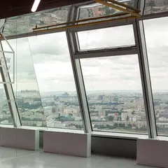
- Смотровая iCITY · Бесплатная смотровая и коворкинг · м. Шелепиха
- 18 минут пешкомBamboo.Bar · Ресторан с террасой
Встретить закат на бесплатной круговой смотровой iCITY, а потом спуститься в квартал на террасу Bamboo.Bar с зеленью и фонтанами — удобно прямо после работы.
Открыть план: Бесплатная смотровая и терраса в СитиПозвать сюда: Бесплатная смотровая и терраса в Сити
Фото: Дарья Симоненко, CC BY-SA 4.0 · Wikimedia Commons
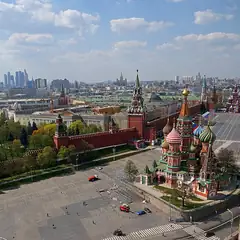
- Красная площадь · Площадь · м. Площадь Революции
- 9 минут пешкомМетрополь · Ресторан в историческом отеле
Прогулка по Красной площади, а с 13 до 17 по воскресеньям — знаменитый бранч-буфет «Метрополя» под витражным куполом с фонтаном.
Открыть план: Воскресный бранч в «Метрополе»Позвать сюда: Воскресный бранч в «Метрополе»
Фото: mos.ru, CC BY 4.0 · Wikimedia Commons
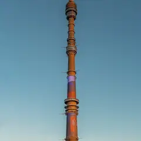
- Останкинская башня · Смотровая площадка · м. Бутырская
- 4 минуты пешкомСедьмое небо · Ресторан на телебашне
Сначала смотровая Останкинской башни со стеклянным полом, потом столик во вращающемся «Седьмом небе»: пока ужинаете, под вами медленно проплывает вся Москва. Билеты и бронь — заранее.
Открыть план: Годовщина на 337 метрахПозвать сюда: Годовщина на 337 метрах
Фото: Klodklodklod77, CC BY-SA 4.0 · Wikimedia Commons
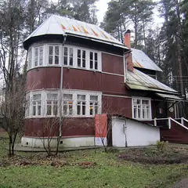
- Дом-музей Пастернака · Музей · м. Боровское шоссе
- 10 минут пешкомДом творчества Переделкино · Литературный центр
- 1 минута пешкомБиблиотека · Ресторан
Дача Пастернака, прогулка среди сосен писательского городка и обед в «Библиотеке» с камином и книжными полками — почти загородный день, не уезжая из Москвы.
Открыть план: День в ПеределкинеПозвать сюда: День в Переделкине
Фото: Артём Белевич, CC BY-SA 4.0 · Wikimedia Commons
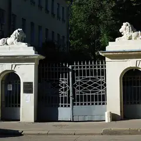
- Музей-квартира Достоевского · Музей · м. Достоевская
- 12 минут пешкомФудхолл «Дружба» · Фудхолл
Квартира, где прошло детство Достоевского, а через десять минут — фудхолл «Дружба»: рамен, утка по-пекински или малатан, порции большие, цены спокойные.
Открыть план: Достоевский и фудхолл «Дружба»Позвать сюда: Достоевский и фудхолл «Дружба»
Фото: Lesio, CC BY-SA 3.0 · Wikimedia Commons
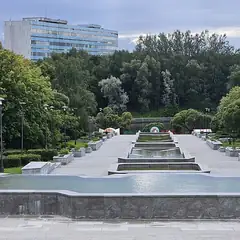
- Парк 40-летия Победы · Парк · Зеленоград — Крюково (МЦД-3)
- 27 минут пешкомBrunch Time · Кафе завтраков
Утренний круг вокруг пруда в главном парке Зеленограда, а потом Brunch Time, где драники, бенедикты и вафли с солёной карамелью подают весь день.
Открыть план: Зеленоград: пруд и завтрак весь деньПозвать сюда: Зеленоград: пруд и завтрак весь день
Фото: Sergey A. Demidov, CC BY 4.0 · Wikimedia Commons
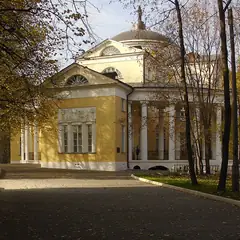
- Сова · Кофейня · м. Волжская
- 27 минут пешкомУсадьба Люблино · Усадьба
Капучино за 150–350 ₽ в «Сове», куда можно с собакой, а потом прогулка к дворцу-ротонде и пруду усадьбы Люблино — на двоих выйдет дешевле одного ужина.
Открыть план: Кофе в «Сове» и Люблино с собакойПозвать сюда: Кофе в «Сове» и Люблино с собакой
Фото: NVO, CC BY 3.0 · Wikimedia Commons
- Красная площадь · Площадь · м. Площадь Революции
- 3 минуты пешкомBosco Cafe · Кафе с видом на Кремль
Красная площадь утром, пока нет толп и очередей, а с 9 часов — завтрак в Bosco Cafe в ГУМе, где окна смотрят прямо на Кремль.
Открыть план: Красная площадь до толп и завтракПозвать сюда: Красная площадь до толп и завтрак
Фото: mos.ru, CC BY 4.0 · Wikimedia Commons
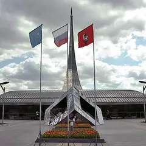
- Музей космонавтики · Музей · м. ВДНХ
- 9 минут пешкомМоскино Космос · Кинотеатр
Спускаемые аппараты и скафандры под монументом «Покорителям космоса», а потом сеанс в кинотеатре «Космос» 1964 года — на огромном экране или в крошечном зале с пуфами. Билеты недорогие.
Открыть план: Музей космонавтики и кино в «Космосе»Позвать сюда: Музей космонавтики и кино в «Космосе»
Фото: Музей космонавтики, CC0 · Wikimedia Commons
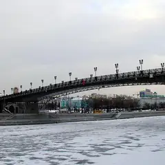
- Патриарший мост · Пешеходный мост · м. Кропоткинская
- 1 минута пешкомLui · Ресторан с видом на реку
Закат на Патриаршем мосту с видом на Кремль, а на другом берегу, у «Красного Октября», — ужин в Lui, откуда за рекой виден храм Христа Спасителя.
Открыть план: Патриарший мост и ужин у рекиПозвать сюда: Патриарший мост и ужин у реки
Фото: NVO, общественное достояние · Wikimedia Commons
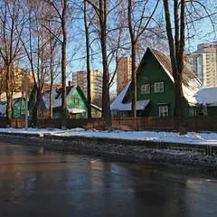
- Посёлок «Сокол» · Исторический посёлок · м. Сокол
- 22 минуты пешкомClara · Кофейня
Тихие улицы посёлка «Сокол» с деревянными домами 1920-х, а потом Clara у «Октябрьского Поля»: мест много, раф с лавандой и канеле — можно сидеть и говорить часами.
Открыть план: Посёлок художников и кофеПозвать сюда: Посёлок художников и кофе
Фото: A.Savin, CC BY-SA 3.0 · Wikimedia Commons
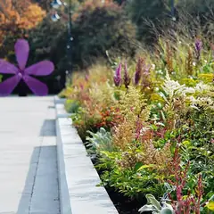
- Сиреневый сад · Сад · м. Черкизовская
- 11 минут пешкомBrancho · Кафе завтраков
Утренняя прогулка по Сиреневому саду на Щёлковском шоссе, а потом Brancho со своей пекарней: шакшука или скандинавский завтрак с пастрами.
Открыть план: Сиреневый сад и шакшукаПозвать сюда: Сиреневый сад и шакшука
Фото: Kristy2906, CC BY-SA 4.0 · Wikimedia Commons
- Сходненская чаша · Природный памятник · м. Сходненская
- 17 минут пешкомИду лесом · Кофейня в усадьбе
Вид сверху на Сходненскую чашу — природный амфитеатр в Тушине, — потом по старому парку над Сходней в «Иду лесом»: мягкие диваны, книги и завтраки.
Открыть план: Сходненская чаша и кофейня в усадьбеПозвать сюда: Сходненская чаша и кофейня в усадьбе
Фото: barmalei1971, CC BY-SA 3.0 · Wikimedia Commons
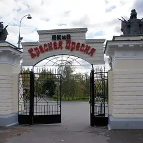
- Парк «Красная Пресня» · Парк · м. Деловой центр
- 5 минут пешкомЧаiка · Ресторан-яхта
Круг по старинному парку «Красная Пресня» с прудами и мостиками, а потом ужин при свечах на яхте «Чаiка»: в окнах река, гостиница «Украина» и огни Сити.
Открыть план: Тихий парк и ужин на яхтеПозвать сюда: Тихий парк и ужин на яхте
Фото: Akkit, CC BY-SA 3.0 · Wikimedia Commons
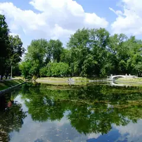
- Усадьба Трубецких · Парк · м. Фрунзенская
- 6 минут пешкомBlack Market · Бистро с бранчами
Неспешный круг по усадьбе Трубецких с прудом и старыми липами, а через пять минут — Black Market с драниками, лососем и сырниками; по выходным там бранчи.
Открыть план: Усадебный парк и большой завтракПозвать сюда: Усадебный парк и большой завтрак
Фото: Simm, CC BY-SA 2.5 · Wikimedia Commons
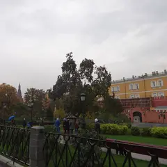
- Александровский сад · Сад · м. Александровский сад
- 12 минут пешкомСеверяне · Ресторан с завтраками и бранчами
Утро в Александровском саду до толп, а потом «Северяне» на Большой Никитской: камерный ресторан с дровяной печью открывается в 9, бранч по выходным лучше бронировать.
Открыть план: Утро у Кремля и бранч у печиПозвать сюда: Утро у Кремля и бранч у печи
Фото: Надежда Пивоварова, CC BY-SA 3.0 · Wikimedia Commons
- Сокольники · Парк · м. Сокольники
- 1 минута пешкомGreen Park · Ресторан в парке
Лучевые аллеи в золоте и выход в лес, а потом обед в ресторане прямо в парке.
Открыть план: Аллеи СокольниковПозвать сюда: Аллеи Сокольников
Фото: Alexx Zimin, CC BY-SA 4.0 · Wikimedia Commons
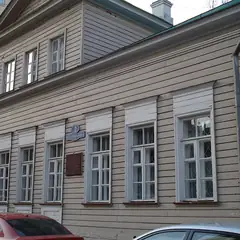
- Дом-музей Лермонтова · Музей · м. Арбатская
- 4 минуты пешкомThe Nappe Bistro · Бистро
Домик Лермонтова на Молчановке и бистро в старинном Скатертном переулке.
Открыть план: Арбатские переулкиПозвать сюда: Арбатские переулки
Фото: Alma Pater, CC BY-SA 3.0 · Wikimedia Commons
- Останкинская башня · Смотровая площадка · м. Бутырская
- 21 минута пешкомДом-музей Королёва · Музей
- 9 минут пешкомМузей космонавтики · Музей
Город с 337 метров со стеклянным полом (возьмите паспорт), потом минут двадцать прогулкой до дома, где жил конструктор Сергей Королёв, а оттуда меньше десяти минут до Музея космонавтики с настоящими спускаемыми аппаратами.
Открыть план: Башня и космосПозвать сюда: Башня и космос
Фото: Klodklodklod77, CC BY-SA 4.0 · Wikimedia Commons
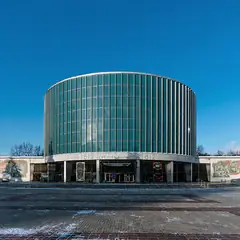
- Бородинская панорама · Музей · м. Парк Победы
- 2 минуты пешкомAtlantica Seafood · Рыбный ресторан
Сначала круговое полотно Рубо о Бородинском сражении, а потом устрицы и рыба в Atlantica в двух минутах пешком. Учтите: по пятницам панорама закрыта.
Открыть план: Бородино и морепродуктыПозвать сюда: Бородино и морепродукты
Фото: Alex 'Florstein' Fedorov, CC BY-SA 4.0 · Wikimedia Commons
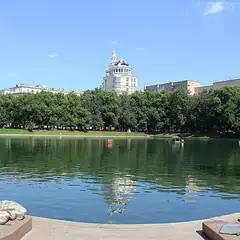
- Патриаршие пруды · Пруд и сквер · м. Маяковская
- 1 минута пешкомERWIN.Павильон · Ресторан на пруду
Неспешный круг вокруг пруда из «Мастера и Маргариты», а потом бранч в ресторане-павильоне Erwin прямо у пруда — он открыт с 9:00.
Открыть план: Бранч на ПатрикахПозвать сюда: Бранч на Патриках
Фото: Dimа, CC BY-SA 3.0 · Wikimedia Commons
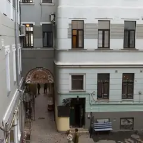
- Музей Булгакова · Музей · м. Маяковская
- 8 минут пешкомPinch · Ресторан
Сначала «Нехорошая квартира» в Музее Булгакова, а потом восемь минут пешком до Pinch у Патриарших: завтраки там подают до 16:00, так что бранч получится в самый раз.
Открыть план: Булгаков и поздний бранчПозвать сюда: Булгаков и поздний бранч
Фото: Usolt, CC BY 3.0 · Wikimedia Commons
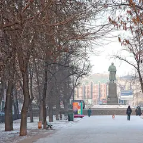
- Гоголевский бульвар · Бульвар · м. Кропоткинская
- 3 минуты пешкомИНО М2 · Гастропространство
Гоголевский бульвар и большое гастропространство в конструктивистском здании.
Открыть план: Бульвар и гастропространствоПозвать сюда: Бульвар и гастропространство
Фото: Panther, CC BY-SA 3.0 · Wikimedia Commons
- Гоголевский бульвар · Бульвар · м. Кропоткинская
- 4 минуты пешкомНитка · Русская чайная
Гоголевский бульвар под жёлтыми липами и долгий чай в отдельной комнате «Нитки».
Открыть план: Бульвар и самоварПозвать сюда: Бульвар и самовар
Фото: Panther, CC BY-SA 3.0 · Wikimedia Commons
Выходные в календаре
Бесплатные события и наш выбор на выходные — на две недели вперёд. Подпишись один раз, и календарь будет обновляться сам.
Подписаться в календаре: бесплатные события и выходные в МосквеGoogle Календарь: бесплатные события и выходные в Москве (откроется в новой вкладке)Файл .ics: бесплатные события и выходные в Москве
Как позвать
- Выбери план, место или событие — в карточке адрес, цены и маршрут в Яндекс Картах.
- Нажми «Позвать сюда» — соберётся приглашение-игра для свидания или голосование для компании.
- Отправь ссылку в любой мессенджер: тебе ответят, а компания отметит, куда и когда может. Бесплатно и без регистрации.